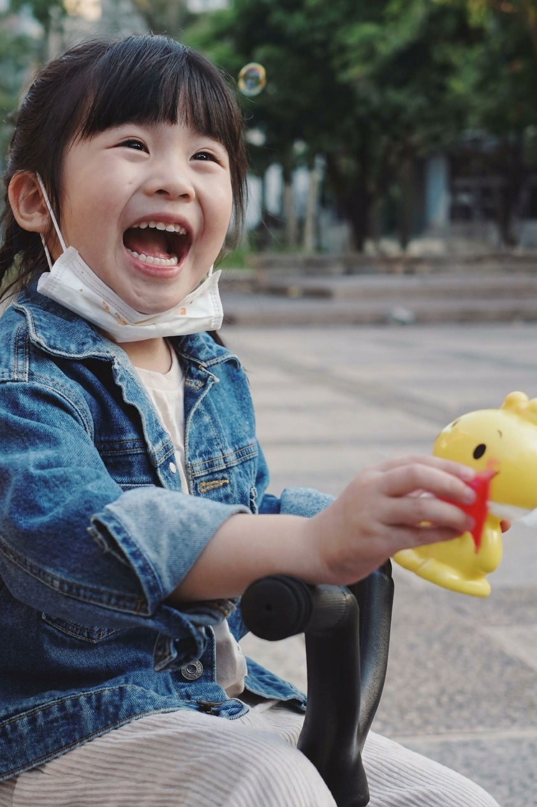
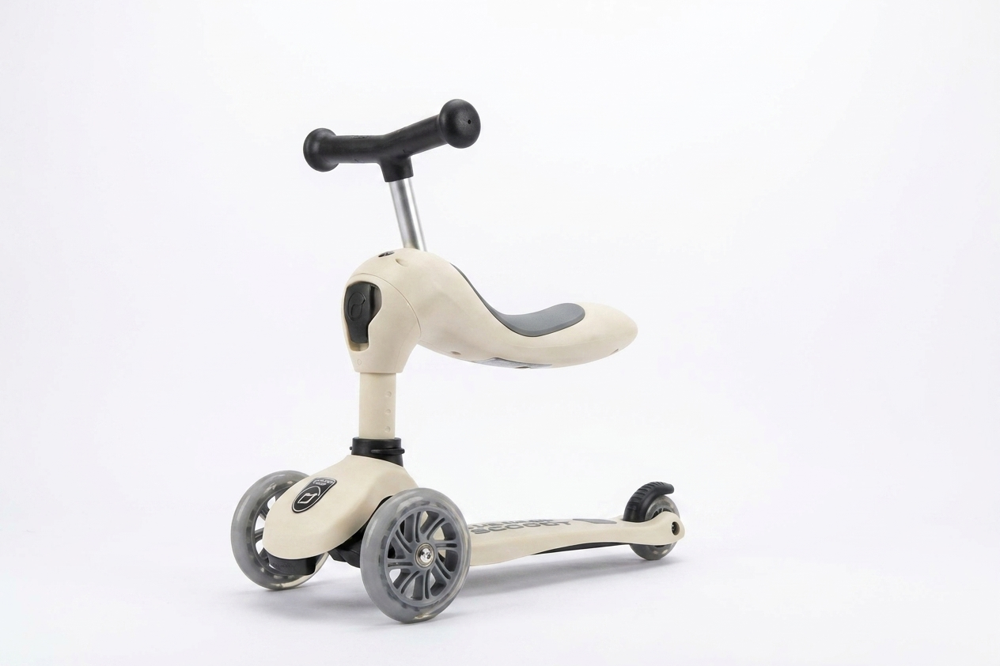
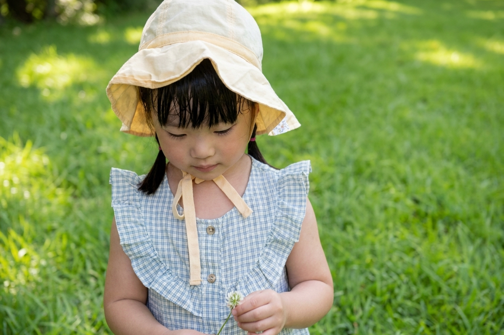
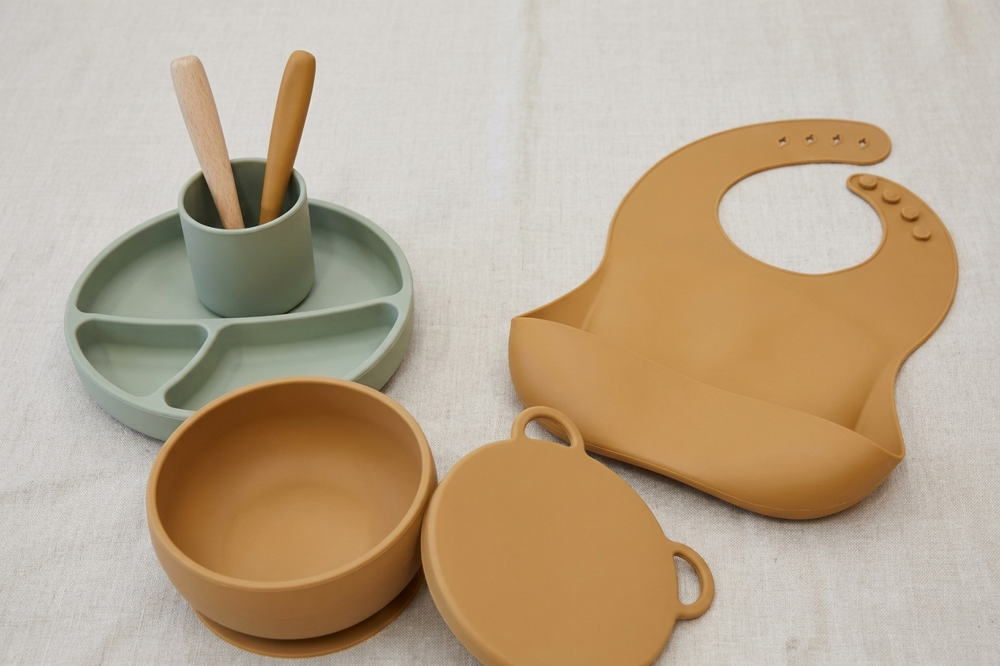
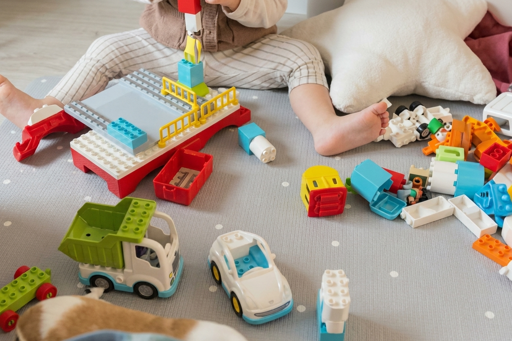
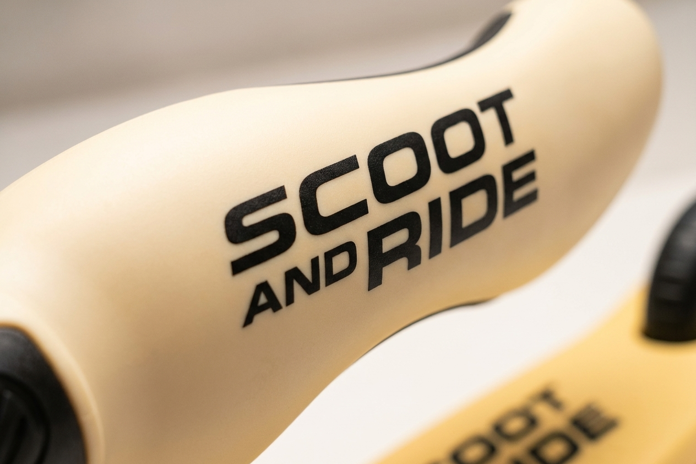

Lively
A children's vacuum-Polaroid toy that turns moments in nature into tangible keepsakes — collect, seal, and remember.
A nature-collecting toy concept grounded in field observation and interviews, resolved into a working physical prototype and a child-safe CMF system.

Screens win because nature doesn't keep score.
Children spend more time on devices and less outdoors, and abstract ideas like sustainability or a product's life cycle are hard for them to grasp. Parents want educational toys that don't feel like another screen — but few options reward the simple act of being outside.
I designed for children around 5–10 and the parents who shape what they play with.
How might we
…turn a walk in nature into something children want to collect, keep, and remember — away from screens?
Kids already collect treasures — they just lose them.
I observed children at parks and ran informal interviews with them and their parents about outdoor play and learning toys. Four themes shaped the design direction.
- 01
Collecting is a ritual kids love.
The hands-on act of gathering and preserving is the play — the object is almost secondary.
- 02
Parents want it off-screen.
They actively prefer toys with an educational, non-digital core.
- 03
Keepsakes spark reflection.
Turning a memory into something tangible to keep and share makes the experience last.
"It's like catching little monsters and storing them!"— Interview participant, boy, age 8
Make nature tangible, off-screen by design.
Make nature tangible
Give the walk a physical reward the child can hold.
Off-screen by design
The play happens outdoors, with the hands.
Keep the memory, not just the object
Each find becomes a card tied to a place and a feeling.
Collect, vacuum-seal, remember.
Children gather natural materials, use a gripping tool to vacuum-seal them, and create Polaroid-style "travel cards" that record the place and the emotion. The mechanic teaches the idea of extending an object's life — sustainability made tangible.

Design & CMF strategy
A product-and-character moodboard set the tone: rounded, fluent forms and warm, tactile materials for a toy that lives outdoors and gets handled by small hands — friendly, never technical.






- #B8B8B8
- #7DBBCE
- #C0B481
- #7E9C7E
- #A68440
- #1A3B62
Design elements
Keywords
A reason to look down and pick something up.
The project resolved into a working prototype and a child-safe CMF system, grounded in field observation and parent interviews.
What I learned
- An abstract value like sustainability lands when you make it a ritual.
- For a children's product, the parent is the second user you must win.
- Interviews reframed the toy from "a gadget" to "a way to remember".
If I continued
- Test the sealing mechanism for safety and durability with more kids.
- Design a companion album for the growing card collection.
- Explore refill and reuse to keep the kit circular.
My contribution
A solo project — I ran the field research and interviews, defined the concept and interaction ritual, and designed the form, CMF, and working prototype.